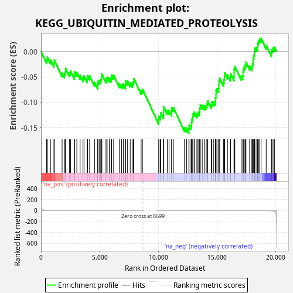
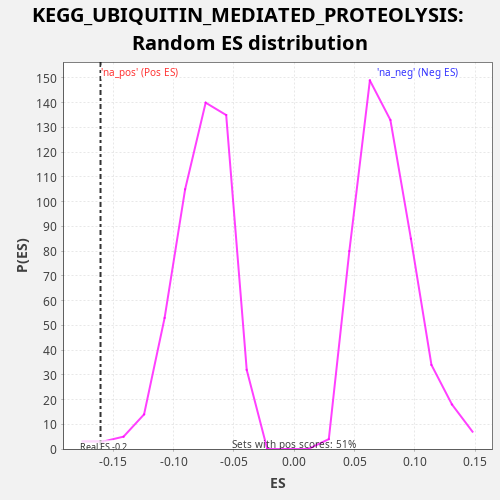

| Dataset | rnk |
| Phenotype | NoPhenotypeAvailable |
| Upregulated in class | na_neg |
| GeneSet | KEGG_UBIQUITIN_MEDIATED_PROTEOLYSIS |
| Enrichment Score (ES) | -0.16050202 |
| Normalized Enrichment Score (NES) | -2.0840523 |
| Nominal p-value | 0.006122449 |
| FDR q-value | 0.031069258 |
| FWER p-Value | 0.23 |

| SYMBOL | RANK IN GENE LIST | RANK METRIC SCORE | RUNNING ES | CORE ENRICHMENT | |
|---|---|---|---|---|---|
| 1 | UBE2Q1 | 476 | 3.080 | -0.0159 | No |
| 2 | UBA7 | 542 | 2.578 | -0.0112 | No |
| 3 | SKP2 | 812 | 1.369 | -0.0168 | No |
| 4 | MID1 | 1101 | 0.849 | -0.0232 | No |
| 5 | CUL4B | 1134 | 0.819 | -0.0169 | No |
| 6 | UBE2N | 1799 | 0.334 | -0.0422 | No |
| 7 | MGRN1 | 2002 | 0.271 | -0.0444 | No |
| 8 | ANAPC7 | 2064 | 0.254 | -0.0395 | No |
| 9 | UBE2L6 | 2101 | 0.245 | -0.0334 | No |
| 10 | UBE2K | 2432 | 0.182 | -0.0420 | No |
| 11 | SYVN1 | 2526 | 0.166 | -0.0387 | No |
| 12 | PIAS3 | 2857 | 0.127 | -0.0473 | No |
| 13 | UBE2J1 | 2861 | 0.126 | -0.0395 | No |
| 14 | CBLB | 3057 | 0.107 | -0.0413 | No |
| 15 | PML | 3335 | 0.084 | -0.0473 | No |
| 16 | TRIM37 | 3579 | 0.070 | -0.0515 | No |
| 17 | ANAPC4 | 3670 | 0.065 | -0.0481 | No |
| 18 | DET1 | 3942 | 0.052 | -0.0537 | No |
| 19 | HERC2 | 3975 | 0.051 | -0.0474 | No |
| 20 | MAP3K1 | 4145 | 0.045 | -0.0479 | No |
| 21 | KEAP1 | 4568 | 0.032 | -0.0611 | No |
| 22 | WWP2 | 4838 | 0.025 | -0.0666 | No |
| 23 | ERCC8 | 4841 | 0.025 | -0.0588 | No |
| 24 | HUWE1 | 4965 | 0.022 | -0.0570 | No |
| 25 | TRIM32 | 5094 | 0.020 | -0.0555 | No |
| 26 | FBXO4 | 5152 | 0.019 | -0.0504 | No |
| 27 | ANAPC1 | 5191 | 0.018 | -0.0444 | No |
| 28 | SIAH1 | 5545 | 0.014 | -0.0541 | No |
| 29 | NHLRC1 | 5638 | 0.012 | -0.0508 | No |
| 30 | CUL2 | 5826 | 0.010 | -0.0522 | No |
| 31 | UBE3A | 5988 | 0.009 | -0.0523 | No |
| 32 | SKP1 | 6029 | 0.009 | -0.0464 | No |
| 33 | UBE2W | 6194 | 0.007 | -0.0467 | No |
| 34 | UBA1 | 6687 | 0.004 | -0.0634 | No |
| 35 | STUB1 | 6877 | 0.003 | -0.0649 | No |
| 36 | UBE2A | 7021 | 0.003 | -0.0641 | No |
| 37 | MDM2 | 7208 | 0.002 | -0.0655 | No |
| 38 | ANAPC2 | 7214 | 0.002 | -0.0578 | No |
| 39 | PIAS2 | 7383 | 0.002 | -0.0583 | No |
| 40 | UBE3C | 7610 | 0.001 | -0.0617 | No |
| 41 | PRPF19 | 7783 | 0.001 | -0.0624 | No |
| 42 | UBE2Z | 7882 | 0.000 | -0.0593 | No |
| 43 | XIAP | 7920 | 0.000 | -0.0533 | No |
| 44 | BRCA1 | 8543 | 0.000 | -0.0765 | No |
| 45 | ITCH | 8659 | 0.000 | -0.0743 | No |
| 46 | CUL3 | 10047 | -0.000 | -0.1358 | No |
| 47 | ANAPC5 | 10052 | -0.000 | -0.1281 | No |
| 48 | DDB1 | 10181 | -0.000 | -0.1266 | No |
| 49 | ANAPC10 | 10222 | -0.000 | -0.1206 | No |
| 50 | UBE2M | 10453 | -0.000 | -0.1242 | No |
| 51 | UBA3 | 10462 | -0.000 | -0.1167 | No |
| 52 | CBLC | 10467 | -0.000 | -0.1089 | No |
| 53 | UBE2B | 10769 | -0.001 | -0.1161 | No |
| 54 | RBX1 | 10922 | -0.001 | -0.1157 | No |
| 55 | UBE2D1 | 11148 | -0.001 | -0.1191 | No |
| 56 | UBE2S | 11149 | -0.001 | -0.1111 | No |
| 57 | UBE2R2 | 11292 | -0.002 | -0.1103 | No |
| 58 | CDC23 | 12238 | -0.006 | -0.1497 | No |
| 59 | WWP1 | 12421 | -0.007 | -0.1509 | No |
| 60 | CDC26 | 12614 | -0.008 | -0.1526 | Yes |
| 61 | KLHL9 | 12629 | -0.008 | -0.1453 | Yes |
| 62 | SOCS1 | 12797 | -0.009 | -0.1458 | Yes |
| 63 | SAE1 | 12835 | -0.010 | -0.1397 | Yes |
| 64 | UBE2J2 | 12863 | -0.010 | -0.1331 | Yes |
| 65 | DDB2 | 12940 | -0.011 | -0.1290 | Yes |
| 66 | UBE2C | 12970 | -0.011 | -0.1225 | Yes |
| 67 | UBE2L3 | 13074 | -0.012 | -0.1197 | Yes |
| 68 | RHOBTB2 | 13298 | -0.014 | -0.1229 | Yes |
| 69 | PPIL2 | 13399 | -0.015 | -0.1200 | Yes |
| 70 | PIAS4 | 13514 | -0.016 | -0.1178 | Yes |
| 71 | UBE4A | 13545 | -0.017 | -0.1113 | Yes |
| 72 | UBE2I | 13588 | -0.017 | -0.1055 | Yes |
| 73 | FBXW8 | 13754 | -0.020 | -0.1058 | Yes |
| 74 | BIRC6 | 13942 | -0.022 | -0.1073 | Yes |
| 75 | BTRC | 14082 | -0.025 | -0.1063 | Yes |
| 76 | RCHY1 | 14156 | -0.026 | -0.1020 | Yes |
| 77 | ANAPC11 | 14217 | -0.028 | -0.0971 | Yes |
| 78 | CUL7 | 14520 | -0.033 | -0.1043 | Yes |
| 79 | UBE2O | 14578 | -0.035 | -0.0992 | Yes |
| 80 | CDC34 | 14734 | -0.038 | -0.0990 | Yes |
| 81 | UBE3B | 14875 | -0.042 | -0.0981 | Yes |
| 82 | TRIP12 | 14882 | -0.042 | -0.0904 | Yes |
| 83 | SOCS3 | 14928 | -0.043 | -0.0848 | Yes |
| 84 | UBR5 | 14933 | -0.043 | -0.0770 | Yes |
| 85 | UBE2D4 | 15016 | -0.045 | -0.0732 | Yes |
| 86 | HERC4 | 15157 | -0.050 | -0.0723 | Yes |
| 87 | CUL1 | 15175 | -0.051 | -0.0652 | Yes |
| 88 | UBE2D2 | 15192 | -0.051 | -0.0580 | Yes |
| 89 | UBA2 | 15240 | -0.053 | -0.0525 | Yes |
| 90 | UBE2D3 | 15566 | -0.065 | -0.0608 | Yes |
| 91 | UBE2H | 15609 | -0.066 | -0.0550 | Yes |
| 92 | CUL5 | 15657 | -0.069 | -0.0494 | Yes |
| 93 | UBE2E2 | 15668 | -0.069 | -0.0420 | Yes |
| 94 | RNF7 | 15908 | -0.080 | -0.0460 | Yes |
| 95 | CDC16 | 16159 | -0.093 | -0.0506 | Yes |
| 96 | FBXW7 | 16172 | -0.094 | -0.0432 | Yes |
| 97 | UBE2Q2 | 16463 | -0.114 | -0.0498 | Yes |
| 98 | TRAF6 | 16475 | -0.116 | -0.0424 | Yes |
| 99 | CDC27 | 16477 | -0.116 | -0.0345 | Yes |
| 100 | ANAPC13 | 16534 | -0.120 | -0.0294 | Yes |
| 101 | UBOX5 | 17071 | -0.172 | -0.0483 | Yes |
| 102 | UBE2E1 | 17215 | -0.192 | -0.0475 | Yes |
| 103 | HERC1 | 17237 | -0.195 | -0.0407 | Yes |
| 104 | CUL4A | 17261 | -0.199 | -0.0339 | Yes |
| 105 | UBA6 | 17344 | -0.212 | -0.0300 | Yes |
| 106 | BIRC3 | 17430 | -0.226 | -0.0264 | Yes |
| 107 | HERC3 | 17484 | -0.235 | -0.0211 | Yes |
| 108 | FBXW11 | 17797 | -0.303 | -0.0288 | Yes |
| 109 | UBE2G2 | 17987 | -0.349 | -0.0303 | Yes |
| 110 | UBE2F | 18038 | -0.366 | -0.0249 | Yes |
| 111 | CDC20 | 18092 | -0.384 | -0.0196 | Yes |
| 112 | FZR1 | 18096 | -0.385 | -0.0118 | Yes |
| 113 | FBXO2 | 18161 | -0.412 | -0.0071 | Yes |
| 114 | UBE2G1 | 18208 | -0.431 | -0.0014 | Yes |
| 115 | SMURF1 | 18218 | -0.436 | 0.0060 | Yes |
| 116 | UBE4B | 18345 | -0.485 | 0.0077 | Yes |
| 117 | NEDD4L | 18467 | -0.545 | 0.0096 | Yes |
| 118 | UBE2E3 | 18490 | -0.557 | 0.0164 | Yes |
| 119 | PIAS1 | 18558 | -0.592 | 0.0210 | Yes |
| 120 | CBL | 18647 | -0.647 | 0.0245 | Yes |
| 121 | VHL | 18775 | -0.770 | 0.0261 | Yes |
| 122 | BIRC2 | 19210 | -1.392 | 0.0123 | Yes |
| 123 | FANCL | 19654 | -4.293 | -0.0020 | Yes |
| 124 | NEDD4 | 19688 | -4.740 | 0.0043 | Yes |
| 125 | KLHL13 | 19798 | -7.125 | 0.0068 | Yes |
| 126 | SMURF2 | 19929 | -16.874 | 0.0082 | Yes |

{kind=link}
{kind=link}